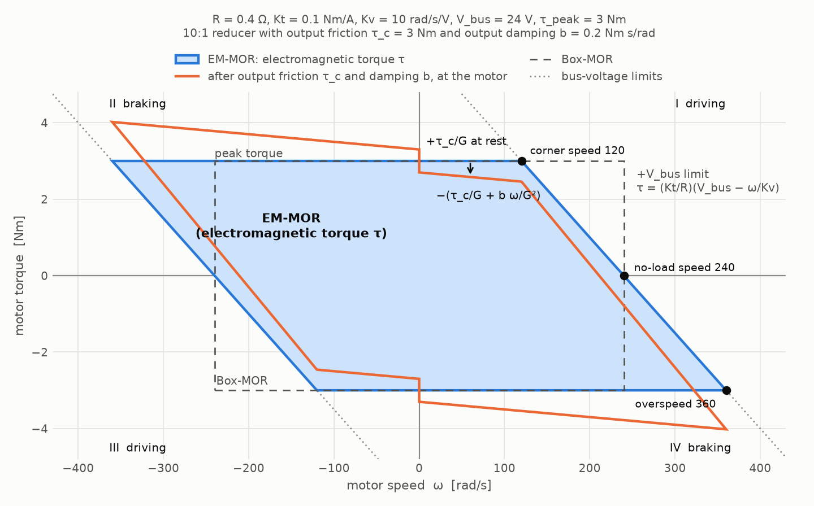

Actuators
An actuator is a DC or BLDC motor with its gear; it drives one joint of an articulated system. On this page, “motor” means only the electric part of an actuator (its resistance, torque constant, speed and torque). RaiSim limits the torque of every actuator to what its motor can actually produce: the motor operating region (MOR), which depends on the motor speed, the bus voltage and the peak torque.
The URDF <limit effort velocity> of a joint describes a rectangle in the torque-speed plane. Kim
et al. call it the Box-MOR in “Reinforcement Learning for High-Speed Quadrupedal Locomotion With
Motor Operating Region Constraints” (IEEE Robotics & Automation Magazine, 2025). A real motor
cannot use that whole rectangle. While it drives a load, the back EMF eats into the bus voltage, so
the available torque drops with speed. While it brakes, the back EMF adds to the bus voltage and
more torque is available than the rectangle allows. Policies trained with the Box-MOR exploit
torques that the real motors cannot deliver at high speed. Training with the electro-mechanical
MOR (EM-MOR) removes that sim-to-real gap.
RaiSim:
reads actuators from the URDF (an
<actuator>element links an actuator file, just like a<link>links a sensor file) or from C++,takes one torque per actuator (
setActuatorTorques()) and, every step, clips each actuator’s motor torque to its EM-MOR. The region limits only the torque: external forces and torques can still drive a motor at any speed,lets an actuator’s motor also turn with other joints (couplings), e.g., a knee motor on the body that drives the knee through a reducer turning with the thigh, and
reports the speed and the MOR-limited torque of every actuator’s motor.
The MOR applies only to actuator torques. Torques from setGeneralizedForce(), the built-in PD
controller, damping, springs and friction add on top and are not clipped by it, and the joint
effort limits do not clip actuator torques (see What happens in a simulation step).
The motor model
Under quasi-static conditions (the current changes slowly compared to the simulation step, the same assumption as a dynamometer torque-speed curve), the voltage over a DC motor is
with the winding resistance \(R\), the current \(i\), the motor speed \(\omega\), the velocity constant \(K_v\) (the inverse of the back-EMF constant) and the torque constant \(K_t\). The motor driver can apply any voltage between \(-V_{bus}\) and \(V_{bus}\). Together with the peak torque \(\tau_{peak}\), at which the iron core saturates and the windings heat up quickly, the motor torque is limited to
All values are on the motor (rotor) side of the reducer and in SI units.
The electromagnetic torque \(\tau = K_t i\) is what the operating region limits. The actuator
also loses torque to friction and damping in its gear and bearings. These losses are specified as
measured at the output of the actuator, i.e., at the joint, and they simply add to the joint’s
own <dynamics friction damping> with the same model (see
Joint Damping and Friction). For an actuator with gear ratio \(G\) and
the joint velocity \(u\) (the joint’s entry of the generalized velocity, see
State and Kinematics), the joint torque from the motor torque \(\tau\) is
and at rest the friction holds the joint as long as the other torques on it stay below \(\tau_{c,joint} + \tau_{c,out}\) (stiction). The losses are passive: they are never clipped by the region, and they do not change it. In the motor’s torque-speed plane, output losses appear reduced by the gear ratio, \(\tau_{c}/G\) and \(b/G^2\), which is the orange outline below.


The region is a parallelogram. Its slanted edges are the bus-voltage limits, its horizontal edges the peak torque. Several speeds characterize it:
Quantity |
Value |
Meaning |
|---|---|---|
stall torque |
\(K_t V_{bus} / R\) |
voltage-limited torque at zero speed |
no-load speed |
\(K_v V_{bus}\) |
the motor cannot drive faster |
corner speed |
\(K_v (V_{bus} - R\,\tau_{peak}/K_t)\) |
above it, the voltage limit (not the peak torque) limits driving |
overspeed limit |
\(K_v (V_{bus} + R\,\tau_{peak}/K_t)\) |
above it, even full reverse voltage drives more than the peak current |
back-EMF damping |
\(K_t / (R K_v)\) |
slope of the voltage limit; a motor at its voltage limit acts as a damper |
The region defines which torque the motor can produce at a speed; it does not limit the speed. External forces and torques, e.g., a foot impact or gravity on a falling leg, can back-drive a motor beyond its no-load speed, where only braking torque is left. Beyond the overspeed limit the peak-torque band and the voltage band no longer overlap: every voltage the driver can apply drives more than the peak current against the back EMF. The saturated core caps the torque, so the only torque left is the peak torque against the rotation, and the region continues as the line \(\tau = -\tau_{peak}\) (\(+\tau_{peak}\) below the negative overspeed limit).
Defining actuators in a URDF
An <actuator> element, placed directly under <robot>, puts one actuator on one joint. The
actuator’s model (its gear ratio, its output losses and its <motor>) usually lives in its own
file with an <actuator_model> root, so that one model can be shared by all joints and robots that
use it:
<robot name="quadruped">
...
<actuator joint="LF_HAA" file="abduction_actuator.xml"/>
<actuator joint="LF_HFE" file="hound_leg_actuator.xml"/>
<actuator joint="LF_KFE" file="hound_leg_actuator.xml">
<coupling joint="LF_HFE" ratio="1"/>
</actuator>
</robot>
actuators/abduction_actuator.xml, a motor behind a 6:1 reducer:
<actuator_model name="abduction_6to1" gear_ratio="6">
<motor resistance="0.4" torque_constant="0.1" velocity_constant="10" bus_voltage="24"
peak_torque="3"/>
</actuator_model>
actuators/hound_leg_actuator.xml, the same motor behind a 10:1 reducer, used for the hip and the
knee. The knee motor also turns with the hip, which its <coupling> declares (see Couplings):
<actuator_model name="hound_leg" gear_ratio="10">
<motor resistance="0.4" torque_constant="0.1" velocity_constant="10" bus_voltage="24"
peak_torque="3"/>
</actuator_model>
The actuator file is searched like a sensor file: first in the directory of the URDF file, then in
[urdf_dir]/actuator, [urdf_dir]/actuators, [urdf_dir]/.. and
[urdf_dir]/../actuators. For a URDF given as a string, the resource directory passed to
World::addArticulatedSystem() takes the place of [urdf_dir].
Instead of linking a file, the model can be written on the <actuator> itself. This is
convenient for URDF strings and quick experiments:
<actuator joint="wheel" gear_ratio="8">
<motor resistance="0.2" torque_constant="0.1" back_emf_constant="0.1" bus_voltage="48"
peak_torque="1.5"/>
</actuator>
RaiSim reads only its own <actuator> elements. The ROS <transmission> and Gazebo elements
that many URDFs contain are ignored.
<actuator>
Attribute or child |
Meaning |
|---|---|
|
the driven joint (required). It must be a revolute (or continuous) or prismatic joint, and each joint can be driven by only one actuator. |
|
actuator name, unique within the robot (default: the joint name, see Actuator names) |
|
actuator file with an |
|
model name of an inline model (informational). A linked file gives the name of its
|
|
another joint the motor also turns with (optional, any number, see Couplings) |
<actuator_model>
Attribute or child |
Meaning |
|---|---|
|
model name, reported by |
|
gear ratio \(G\): motor speed per unit speed of the driven joint (required, positive) |
|
viscous damping of the actuator measured at its output [Nm s/rad] (optional, default 0). It adds to the damping of the driven joint. |
|
Coulomb friction torque of the actuator measured at its output [Nm] (optional, default 0). It adds to the friction of the driven joint. |
|
the motor inside the actuator (exactly one) |
<motor>
Attribute |
Meaning |
|---|---|
|
winding resistance \(R\) [Ohm] (required) |
|
\(K_t\) [Nm/A] (required) |
|
\(K_v\) [rad/s/V] |
|
\(1/K_v\) [V s/rad]. Give exactly one of |
|
bus voltage \(V_{bus}\) [V] (required, see Bus voltage) |
|
\(\tau_{peak}\) [Nm] (optional; without it, only the voltage limits apply) |
<coupling>
Attribute |
Meaning |
|---|---|
|
a revolute or prismatic joint other than the driven one (required). It does not need an actuator of its own. |
|
motor speed per unit speed of that joint (required, finite, any sign) |
Datasheets often list \(K_v\) in rpm/V: multiply by \(2\pi/60\) to get rad/s/V. Make sure \(R\) and \(K_t\) refer to the same winding convention (phase or line-to-line) that the driver’s current control uses.
output_damping and output_friction are joint-side values: the friction and damping you
measure at the joint, e.g., by back-driving it. They act on the driven joint. In the Hound leg (see
Couplings), this is also where the knee reducer’s gears move: its ring gear turns with the thigh,
so its meshes slide with the knee speed, not with the knee motor speed. RaiSim adds them to the
joint’s own <dynamics friction damping>, so you can keep losses in either place or split them.
The rotor inertia is still set at the joint with <dynamics rotor_inertia> as the reflected
inertia \(G^2 J_{rotor}\).
Bus voltage
The bus voltage belongs to the power supply, not to the motor: all motors on one battery see the
same voltage, and it sags together as the battery drains. Every actuator that links the same model
file gets the voltage of its <motor>.
The voltage can be changed at runtime with a single call, for example to follow the battery voltage or to randomize it during training. It only changes the stored voltage and can be called every step:
robot->setBusVoltage(46.5); // all actuators
robot->setBusVoltage("LF_KFE", 46.5); // one actuator, by name
Actuator names
Every actuator has a name that is unique within the articulated system: its name attribute, or
the name of its joint. getActuatorNames() lists the actuators in the order of the
<actuator> elements; getActuatorIndex(name) returns the position of a name.
Errors
Invalid actuators are fatal errors. Errors in an actuator file or an <actuator> element name the
file and row: a missing joint or gear_ratio, a gear ratio that is not positive, a missing or
doubly given motor constant, a missing bus voltage, a non-positive or non-finite motor parameter,
negative output losses, a model without exactly one <motor>, a <coupling> without a joint or
a finite ratio, a missing actuator file, and an <actuator> with both a file and an inline
model. When the robot is built, RaiSim also rejects an unknown, fixed or spherical joint (driven or
coupled), a joint driven by two actuators, a coupling to the driven joint itself or twice to one
joint, and duplicate actuator names.
Couplings
An actuator’s motor turns with its joint through the gear, \(\omega_m = G\,u\). A
<coupling> adds another joint that the motor also turns with:
By conservation of power, \(\tau_m\,\omega_m = \sum_j \tau_j\,u_j\), the motor torque \(\tau_m\) acts on the driven joint with \(G\,\tau_m\), the actuator torque, and on each coupled joint with \(r_c\,\tau_m\).
KAIST Hound (the robot of the paper) puts the hip (HFE) and the knee (KFE) motor of a leg on the body. The hip motor turns the thigh through a planetary reducer with ratio \(G_H\). The knee motor drives the sun gear of a planetary reducer whose ring gear is attached to the thigh, and the planet carrier drives the knee. Relative to the thigh, the knee reducer is an ordinary reducer with ratio \(G_K\), so \(\omega_{sun} - \omega_{HFE} = G_K\,\omega_{KFE}\), i.e.,
the knee actuator has the gear ratio \(G_K\) and a coupling of ratio 1 to the hip,
<actuator joint="LF_KFE" file="hound_leg_actuator.xml">
<coupling joint="LF_HFE" ratio="1"/>
</actuator>
The knee motor torque also loads the hip: \(\tau_{HFE} = G_H\,\tau_{HFE,m} + \tau_{KFE,m}\). When the hip swings, the knee motor turns even if the knee does not, and it can run out of voltage because of the hip speed alone.
Written for all actuators and joints at once, the gear and coupling ratios form the transmission matrix \(\boldsymbol{T}\), one row per actuator: \(\boldsymbol{\omega}_m = \boldsymbol{T}\,\boldsymbol{u}\) for the motor speeds and the joint velocities, and \(\boldsymbol{\tau}_{act} = \boldsymbol{T}^T \boldsymbol{\tau}_m\) for the actuator torques on the joints. For the Hound leg,
[ w_hip_motor ] [ G_H 0 ] [ u_HFE ]
[ w_knee_motor ] = [ 1 G_K ] [ u_KFE ]
A coupling changes which torque a motor can apply and where its torque goes. It does not tie the joints together: every joint keeps its degree of freedom, and the dynamics are still computed for the joints. A mechanism that does tie joints together, e.g., one motor that drives two joints through a linkage, is a constraint between the joints and cannot be described with couplings.
The rotor inertia is the one place where a coupling would also change the dynamics. The kinetic
energy of the motors, \(\frac{1}{2}\,\boldsymbol{\omega}_m^T \boldsymbol{J}_{rotor}\,\boldsymbol{\omega}_m\) with the diagonal matrix of rotor inertias
\(\boldsymbol{J}_{rotor}\) and \(\boldsymbol{\omega}_m = \boldsymbol{T}\,\boldsymbol{u}\), gives the joints the reflected inertia
\(\boldsymbol{T}^T \boldsymbol{J}_{rotor}\,\boldsymbol{T}\). For the Hound leg its off-diagonal term is \(J_{rotor,K}\,G_K\)
between hip and knee. RaiSim models the rotor inertia per joint (rotor_inertia in
<dynamics>), so this term is not simulated. Set rotor_inertia to the diagonal of
\(\boldsymbol{T}^T \boldsymbol{J}_{rotor}\,\boldsymbol{T}\) (\(G_H^2 J_{rotor,H} + J_{rotor,K}\) for the hip and
\(G_K^2 J_{rotor,K}\) for the knee). The off-diagonal term is typically a tenth of the knee’s
own reflected inertia or less.
What happens in a simulation step
The operating region applies to the actuator torques and only to them. At the beginning of every
step, with the joint velocities \(\boldsymbol{u}_t\) of that moment, each actuator (gear ratio \(G\),
driven joint \(j\), couplings \((c, r_c)\) and the torque \(\tau_a\) set with
setActuatorTorques()) computes its motor speed, the bounds of its region at that speed and its
motor torque:
with the stall torque \(\tau_{stall} = K_t V_{bus} / R\) and the back-EMF damping \(b = K_t / (R K_v)\). In monitor mode (see Monitoring without enforcing), \(\tau_m = \tau_a / G\). The motor torque acts with \(G\,\tau_m\) on the driven joint and with \(r_c\,\tau_m\) on each coupled joint, constant for the whole step. With \(\tau_{act,i}\) the sum of these torques on joint \(i\), the torque on the joint over the step is
\(\tau_{ff}\) is set with
setGeneralizedForce()and \(\tau_{PD}\) is the built-in PD torque. Only this sum is clamped to the actuation limits (URDFeffortorsetActuationLimits()).\(b_{joint,i}\) is the joint’s own damping and \(b_{out,i}\) the actuator’s output damping. \(u_{t,i}\) and \(u_{t+1,i}\) are the joint velocity at the beginning and at the end of the step. Damping is passive and is never clipped. It is integrated with the trapezoidal rule (see Joint Damping and Friction).
\(\tau_{friction}\) is the joint friction (the joint’s own plus the actuator’s output friction). The contact solver solves it together with the contacts, as an impulse bounded by \((\tau_{c,joint} + \tau_{c,out})\,\Delta t\) that stops the joint or opposes its motion. This also applies to joints without an actuator.
Springs, external forces and contacts are not clipped either, and the sum is not clamped again.
The PD controller and the springs are integrated implicitly, and the clamp bounds only the explicit part of the PD torque. Joint torque of a simulation step in the articulated system section writes out every term.
Joint effort limits and MOR are separate limits: effort limits do not clip actuator torques,
and MOR does not clip the generalized force or the built-in PD torque. For example, take a
turntable joint spin with a 5 Nm effort limit and no PD, damping, springs or external forces,
driven by the actuator spin (gear ratio 10; \(R = 0.2\ \Omega\), \(K_t = 0.1\) Nm/A,
\(K_v = 10\) rad/s/V, \(V_{bus} = 24\) V and a 1.5 Nm peak torque), whose region allows
15 Nm at the gear output at rest:
robot->setGeneralizedForce(Eigen::VectorXd::Constant(1, 100.));
robot->setActuatorTorque("spin", 100.);
The generalized force contributes 5 Nm and the actuator 15 Nm, 20 Nm in total. At a joint speed of 23.8 rad/s (238 rad/s at the motor, just below its 240 rad/s no-load speed), the voltage limit allows only the 12 Nm stall torque minus the back-EMF damping times the speed, \(12 - 0.05 \cdot 238 = 0.1\) Nm, at the motor, i.e., 1 Nm at the gear output, and the same commands contribute 5 Nm plus 1 Nm, 6 Nm in total. The generalized force is still bounded by the effort limit and the actuator torque by the region; neither limit is applied to their sum.
Because the actuator torques are fixed for the step, contacts and impacts cannot push them out of
the region. Compare an applied motor torque with the region at the speed at the beginning of
the step, ActuatorState::motorSpeed.
A controller should therefore send its torques as actuator torques. RaiSim’s built-in PD
controller acts on the joints and is not an actuator torque; to keep a PD controller inside the
operating regions, compute it explicitly and send the result with setActuatorTorques().
Time step and the voltage limit
At the voltage limit the torque falls with the speed: the motor acts as a damper of \(G^2 K_t / (R K_v)\) at the joint. Because the limit is evaluated at the speed at the beginning of the step, this damper is explicit. A motor driven into its voltage limit settles at the no-load speed if the time step is below twice the mechanical time constant of the drive,
with \(I\) the inertia at the joint, including the reflected rotor inertia
\(G^2 J_{rotor}\) (rotor_inertia in <dynamics>). The reflected rotor inertia usually
dominates, so the bound is about twice the motor’s own mechanical time constant
\(R K_v J_{rotor} / K_t\), a few milliseconds for typical drives. With larger steps the speed
oscillates around the no-load speed instead of settling, but the torque stays inside the region and
the oscillation cannot grow beyond the peak torque. Model the rotor inertia: without it, the bound is
set by the light link alone and is much smaller.
Accuracy
The applied motor torques are the commanded ones clipped to their regions, so they lie inside the regions to round-off, also under foot impacts. The tests check this to \(10^{-12}\) of the peak torque.
Commanding actuator torques
Every actuator takes one torque, at the output of its gear:
// one entry per actuator, in this order:
// {"LF_HAA", "LF_HFE", "LF_KFE", "RF_HAA", ...}
const auto& names = robot->getActuatorNames();
robot->setActuatorTorques(torques); // Eigen::VectorXd, one torque per actuator
robot->setActuatorTorque("LF_KFE", 12.); // one actuator, by name
robot->setActuatorTorque(2, 12.); // the same actuator, by index
The order and the names are described in Actuator names. The same order is used by
getActuators(), getActuatorTorques(), getActuatorTorqueBounds() and
getActuatorStates().
The torque is at the output of the actuator’s gear: its motor torque times its gear ratio. It is the torque on the driven joint. An actuator with couplings also applies its motor torque times the coupling ratio to each coupled joint: 12 Nm on the Hound knee is a knee motor torque of 1.2 Nm, which also loads the hip with 1.2 Nm.
The actuator torques hold until they are set again. getActuatorTorques() returns the torques
that were set; getActuatorStates() reports what the motors applied. getGeneralizedForce()
returns the effort-clipped generalized force and built-in PD contribution plus the mapped
actuator torques clipped to MOR at the current motor speeds. It excludes passive damping, springs
and friction, and its built-in PD contribution is approximate because PD is integrated implicitly.
Actuator torque bounds
getActuatorTorqueBounds(lower, upper) returns, per actuator, the torques it can apply now, at
the output of its gear: its motor’s region at the current motor speed, times its gear ratio. These
are exactly the bounds to which the next step clips setActuatorTorques().
Use them, e.g., to scale a policy’s actions into the admissible range:
raisim::VecDyn lower, upper;
robot->getActuatorTorqueBounds(lower, upper); // [Nm or N], getActuatorNames() order
for (size_t i = 0; i < robot->getActuatorNames().size(); ++i)
torques[i] = 0.5 * (lower[i] + upper[i]) + 0.5 * (upper[i] - lower[i]) * action[i]; // action in [-1, 1]
robot->setActuatorTorques(torques);
With the region not enforced (see Monitoring without enforcing), the bounds are infinite.
Reading the actuator states
getActuatorStates() returns one raisim::ActuatorState per actuator for the last step. Except
for jointLossTorque, its fields describe the actuator’s motor, on the rotor side of the gear.
Multiply a motor torque by the gear ratio to get the actuator torque on the driven joint, and by a
coupling ratio to get the torque on a coupled joint.
Field |
Meaning |
|---|---|
|
motor speed at the beginning of the step [rad/s]; the region of the step is evaluated at it |
|
motor speed averaged over the step [rad/s]; |
|
motor torque requested with |
|
electromagnetic motor torque \(K_t i\): the commanded motor torque clipped to the operating region [Nm]. The effort limits do not clip it. |
|
friction and damping torque on the driven joint over the step [Nm, at the joint]: the joint’s own plus the actuator’s output losses. It opposes the joint motion. |
|
|
The states are computed at the end of integration and describe that completed step. A subsequent
setState() reset does not mix new velocities into the previous step. Concurrent reads are
supported while no thread integrates or changes the actuator configuration; synchronize readers
with those mutations.
To check the region, or to use the motor torques in a reward (power, saturation penalties):
const auto& states = robot->getActuatorStates();
const auto& actuators = robot->getActuators();
for (size_t i = 0; i < states.size(); ++i) {
// [Nm], zero inside the region
const double outside = raisim::motorOperatingRegionViolation(
actuators[i].motor, states[i].motorSpeed, states[i].motorTorque);
// mechanical power of the motor [W]
const double power = states[i].motorTorque * states[i].averageMotorSpeed;
}
The free functions raisim::motorTorqueBounds(parameters, speed) (the admissible torque interval
at a speed), raisim::clipMotorTorque(parameters, speed, torque) and
raisim::motorOperatingRegionViolation(parameters, speed, torque) work on the motor alone,
without its gear: they take a rotor-side speed and a rotor-side torque, like the ActuatorState
fields. For torques at the gear output, i.e., in the units of setActuatorTorques(), use
getActuatorTorqueBounds() (see Actuator torque bounds).
Monitoring without enforcing
setMotorOperatingRegionEnforced(false) applies the actuator torques as commanded, without
clipping (monitor mode), and getActuatorStates() still reports the motor quantities, including
the bound that the command exceeds. This reproduces the paper’s comparison: run a controller without
the motor operating region and measure how far it leaves the region. The output friction and
damping still act, and the effort limits still clamp only the feedforward and PD torque.
C++ API
An ActuatorDefinition is the C++ form of one <actuator> element with its model: name
(empty: the joint name), model, joint, gearRatio, the couplings (each an
ActuatorCoupling with a joint and a ratio), the motor (DcMotorParameters), and
outputDamping and outputFriction.
To change only the bus voltage, use setBusVoltage() (see Bus voltage). Other parameters,
such as a randomized winding resistance, are changed by editing the definitions and setting them
again. setActuators() replaces all actuators, including those from the URDF, and resets every
actuator torque to zero:
auto actuators = robot->getActuators();
for (auto& actuator : actuators)
actuator.motor.resistance *= uniform(0.9, 1.1);
robot->setActuators(actuators);
A Hound knee from scratch:
raisim::ActuatorDefinition knee;
knee.joint = "LF_KFE";
knee.gearRatio = 10.;
knee.couplings = {{"LF_HFE", 1.}}; // the knee motor also turns with the hip
knee.motor.resistance = 0.4;
knee.motor.torqueConstant = 0.1;
knee.motor.velocityConstant = 10.;
knee.motor.busVoltage = 24.;
knee.motor.peakTorque = 3.;
robot->setActuators({knee});
Method |
Purpose |
|---|---|
|
replace the actuators (one |
|
the actuator definitions, with their names and the bus voltages set since |
|
number of actuators, their names in the order used by all per-actuator methods, the index of
a name ( |
|
set actuator torques at the gear outputs; they hold until set again |
|
the actuator torques as set |
|
admissible actuator torques at the gear outputs at the current motor speeds |
|
change the bus voltage of all actuators or of one |
|
motor speeds and torques of the last step |
|
clip to the region (default) or only monitor it |
A change to the actuators wakes a sleeping robot only if it changes the force on it: a changed
actuator torque, a bus voltage or enforcement change while an actuator torque acts, or
setActuators() while an old actuator torque was nonzero or when the output losses change.
Actuators are part of world checkpoints (World::captureCheckpoint()), so changing them between
a capture and a restore is undone by the restore.
raisimGymTorch and raisim_engine2
Actuators are part of the URDF, so a world.xml that refers to the URDF brings them along.
World::exportToXml() also writes the current actuators of every articulated system into an
<actuators> element of its entry: actuators set with setActuators(), bus voltages changed at
run time, nonzero actuator torques and the monitor mode. Each is an <actuator> with its model
inline and, if nonzero, a torque attribute. Loading that world.xml replaces the URDF’s
actuators with them.
raisim_engine2’s Export for raisimGymTorch bundles linked actuator files together with the
URDF, like sensor files, so the exported package loads with its actuators on another machine.
In a raisimGymTorch environment, scale the policy’s actions with getActuatorTorqueBounds()
before setActuatorTorques(), and read getActuatorStates() after world->integrate() to add
the motor speeds or the saturation to the observation, or to penalize torques that saturate the
motors.
Example
rayrai_motor_operating_region drives the twelve actuators of a fixed-base quadruped rig randomly
and plots the operating regions and operating points of their motors. See
Rayrai Example: Motor Operating Region.

API
-
struct DcMotorParameters
Steady-state electrical model of the DC/BLDC motor inside an actuator, on the motor (rotor) side of the actuator’s gear, in SI units. The operating region limits the motor’s electromagnetic torque Kt i.
Public Functions
-
inline double torquePerVolt() const
- Returns:
motor torque per volt, Kt / R [Nm/V]
-
inline double backEmfDamping() const
- Returns:
slope of the voltage limit, Kt / (R Kv) [Nm s/rad]. A motor at its voltage limit acts as a damper with this coefficient.
-
inline double stallTorque() const
- Returns:
torque at zero speed and full bus voltage, Kt Vbus / R [Nm]
-
inline double noLoadSpeed() const
- Returns:
speed at zero torque and full bus voltage, Kv Vbus [rad/s]
-
inline bool isValid() const
- Returns:
true if R, Kt, Kv and Vbus are positive and finite, the peak torque is positive (it may be infinite), and the constants derived from them (torque per volt, stall torque, back-EMF damping, no-load speed) are positive and finite. Finite parameters can overflow the derived constants, which would make the region undefined. ArticulatedSystem::setActuators(), ArticulatedSystem::setBusVoltage() and the URDF loader reject invalid motors.
Public Members
-
double resistance
winding resistance R [Ohm]
-
double torqueConstant
torque constant Kt [Nm/A]
-
double velocityConstant
velocity constant Kv [rad/s/V]. It is the inverse of the back-EMF constant.
-
double busVoltage
bus voltage Vbus [V]
-
double peakTorque
peak torque [Nm] at which the core saturates. Infinity leaves only the voltage limit.
-
inline double torquePerVolt() const
-
struct ActuatorDefinition
An actuator: a DC/BLDC motor with its gear. It drives one revolute or prismatic joint, and its torque is commanded at the output of the gear (ArticulatedSystem::setActuatorTorques()): the motor torque times the gear ratio.
Its motor turns at w_m = gearRatio * qdot_joint + sum_c ratio_c * qdot_c where the sum runs over its couplings. A coupling describes a motor that also turns with another joint, e.g. a knee motor whose reducer housing turns with the hip (KAIST Hound): ratio 1 on the hip. By conservation of power, the motor torque tau_m acts on the driven joint with gearRatio * tau_m (the actuator torque) and on each coupled joint with ratio_c * tau_m.
Public Functions
-
inline bool isValid() const
- Returns:
true if the motor is valid (DcMotorParameters::isValid()), the gear ratio is positive and finite, the coupling ratios are finite and the output losses are non-negative and finite
Public Members
-
std::string name
actuator name. ArticulatedSystem::setActuators() names an actuator without a name after its joint.
-
std::string model
model name, e.g. the name of its <actuator_model> (informational)
-
std::string joint
name of the driven revolute or prismatic joint
-
double gearRatio
gear ratio: motor speed per unit speed of the driven joint (positive)
-
std::vector<ActuatorCoupling> couplings
joints other than the driven one that the motor also turns with
-
DcMotorParameters motor
the motor inside the actuator
-
double outputDamping
viscous damping of the actuator, measured at its output [Nm s/rad]. It adds to the damping of the joint the actuator drives.
-
double outputFriction
Coulomb friction torque of the actuator, measured at its output [Nm]. It adds to the friction of the joint the actuator drives.
-
inline bool isValid() const
-
struct ActuatorCoupling
A coupling of an actuator’s motor to a joint other than the one the actuator drives (see ActuatorDefinition).
-
struct ActuatorState
The state of an actuator in the last simulation step, with the motor quantities on the motor (rotor) side of its gear. The region is evaluated at the motor speed at the beginning of the step and the MOR-limited motor torque is constant over the step, so (motorSpeed, motorTorque) is the operating point to compare with the region: motorOperatingRegionViolation(motor, motorSpeed, motorTorque) is zero when the region is enforced (see ArticulatedSystem::setActuators()). The joint effort limits do not clip actuator torques.
Public Members
-
double motorSpeed
motor speed at the beginning of the step [rad/s]; the region of the step is evaluated at it
-
double averageMotorSpeed
motor speed averaged over the step [rad/s]; motorTorque * averageMotorSpeed is the mechanical power of the motor
-
double commandedMotorTorque
motor torque requested with setActuatorTorques() (the actuator torque divided by its gear ratio) [Nm]
-
double motorTorque
electromagnetic motor torque Kt i [Nm]: the commanded motor torque clipped to the operating region
-
double jointLossTorque
friction and damping torque on the actuator’s joint over the step [Nm or N, at the joint]: the joint’s own friction and damping plus the output losses of the actuator. It opposes the joint motion.
-
MotorSaturation saturation
the bound that limited the commanded motor torque (NONE if it was admissible)
-
double motorSpeed
-
enum class raisim::MotorSaturation : int
The bound of the operating region that limits a motor torque.
Values:
-
enumerator NONE
the torque is inside the operating region
-
enumerator PEAK_TORQUE
the torque is limited by the peak torque
-
enumerator VOLTAGE
the torque is limited by the bus voltage (back EMF)
-
enumerator NONE
-
struct MotorTorqueBounds
admissible motor torque interval at a given motor speed
Public Members
-
double lower
lowest admissible motor torque [Nm]
-
double upper
highest admissible motor torque [Nm]
-
MotorSaturation lowerSaturation
bound that limits torques below
lower
-
MotorSaturation upperSaturation
bound that limits torques above
upper
-
double lower
The ArticulatedSystem methods are documented with the class in ArticulatedSystem API.
The following free functions work on the motor alone (rotor-side speed and torque, without the gear):
-
inline MotorTorqueBounds raisim::motorTorqueBounds(const DcMotorParameters &motor, double speed)
Admissible motor torque at motor speed
speed[rad/s]. Above the speed at which even full reverse voltage cannot keep the current below the peak, the voltage band no longer reaches the peak-torque band: every admissible voltage drives more than the peak current against the back EMF. The saturated core caps the torque at the peak torque, so the interval collapses to the peak torque that opposes the motion (-peak above the forward overspeed, +peak below the reverse one).- Parameters:
motor – [in] motor parameters
speed – [in] motor (rotor-side) speed [rad/s]
- Returns:
the admissible torque interval and the bound that limits each side
-
inline MotorTorqueBounds raisim::motorTorqueBounds(double stallTorque, double backEmfDamping, double peakTorque, double speed)
motorTorqueBounds() with the motor constants evaluated once: both voltage limits are lines of slope -backEmfDamping through +/-stallTorque.
- Parameters:
stallTorque – [in] DcMotorParameters::stallTorque() [Nm]
backEmfDamping – [in] DcMotorParameters::backEmfDamping() [Nm s/rad]
peakTorque – [in] DcMotorParameters::peakTorque [Nm]
speed – [in] motor (rotor-side) speed [rad/s]
- Returns:
the admissible torque interval and the bound that limits each side
-
inline double raisim::clipMotorTorque(const DcMotorParameters &motor, double speed, double torque, MotorSaturation *saturation = nullptr)
Clips a motor torque request to the operating region at motor speed
speed.- Parameters:
motor – [in] motor parameters
speed – [in] motor (rotor-side) speed [rad/s]
torque – [in] requested motor torque [Nm]
saturation – [out] the bound that limited the torque (NONE if the request was admissible)
- Returns:
the admissible motor torque closest to the request
-
inline double raisim::motorOperatingRegionViolation(const DcMotorParameters &motor, double speed, double torque)
- Parameters:
motor – [in] motor parameters
speed – [in] motor (rotor-side) speed [rad/s]
torque – [in] motor torque [Nm]
- Returns:
how far [Nm] the torque lies outside the operating region at
speed(zero inside)